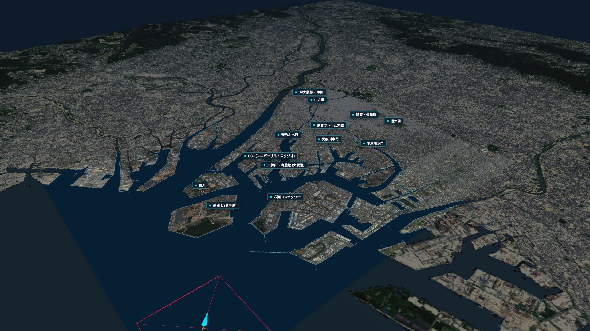
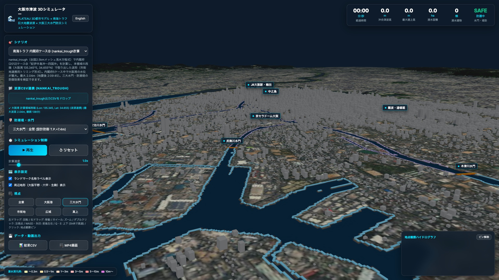
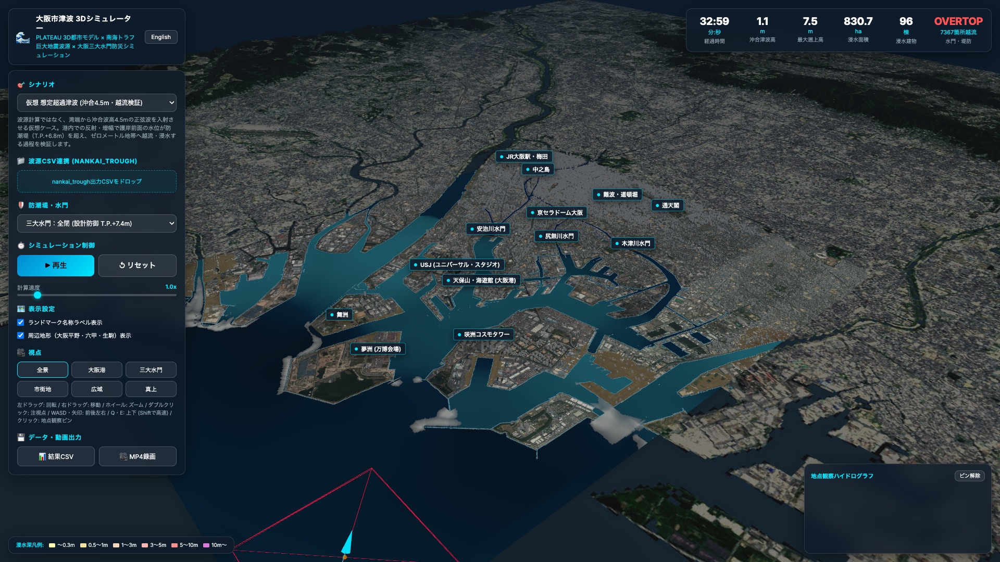
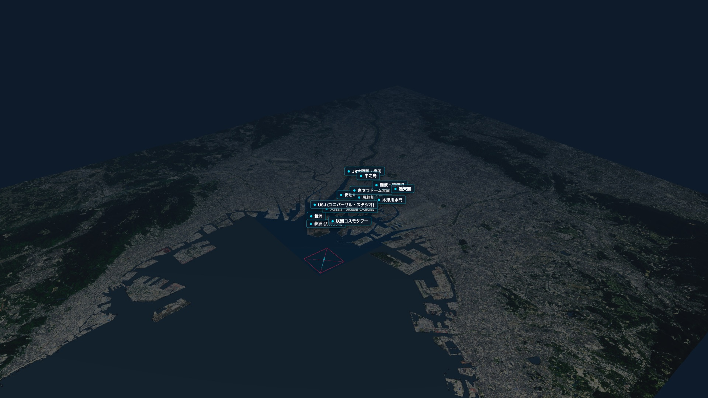

大阪湾から大阪港・河川・市街地へ押し寄せる津波と、安治川・尻無川・木津川の三大水門、防潮堤の防御をリアルタイム3Dで観察。T.P.0m を下回るゼロメートル地帯、夢洲・舞洲・咲洲の人工島、市内の河川網を国土地理院の10m標高で再現し、浅水長波モデルで浸水を計算します。
大阪湾からの入射、港内での反射・増幅、防潮堤の越流、河川の遡上、ゼロメートル地帯への浸水までを、3Dで追いかけられます。

国土地理院 DEM5A / DEM10B国土地理院の標高データでは海と河川が欠測域になるため、海岸線と淀川・安治川・木津川・尻無川・道頓堀川・大川などの河道を正確に抽出できます。西淀川・此花・港・大正などの T.P.0m 未満の市街地はそのままの標高で、夢洲・舞洲・咲洲の人工島は陸地として配置しています。

三大水門 × 防潮堤安治川水門（T.P.+7.4m）・尻無川水門（+6.7m）・木津川水門（+7.2m）を河道の断面に合わせて配置。全閉にすると、堂島川・土佐堀川・大川・道頓堀川などの内側河川が湾から完全に切り離されます。防潮堤は実際の海岸線・河岸に沿って自動で配置し、水門の外側は T.P.+6.8m、内側の河川は T.P.+3.5m の護岸としています。

越流・浸水の検証浅水長波の局所慣性モデル（de Almeida et al. 2012 の θ 重み付きスキーム）を Web Worker で計算。大阪湾側の境界には造波・吸収層を置き、湾から入る波を作りつつ、港から戻る反射波は外へ逃がします。港の奥の護岸で波が重なって高くなり、防潮堤を越えて低い市街地へ流れ込む様子を確認できます。

osaka.tif × 航空写真計算領域の周囲には、1秒角 DEM（osaka.tif）と航空写真で大阪平野・六甲山地・生駒山地・大阪湾岸の約 63×56km を背景として表示。マウスで回転・移動・ズーム、WASD キーで前後左右、Q/E で上下に動けます。ダブルクリックで注視点を移し、視点ボタンで全景・大阪港・三大水門・市街地・広域・真上にすぐ切り替えられます。
南海トラフ広域シミュレーター nankai_trough の計算結果をそのまま波源として読み込めます。
nankai_trough で内閣府(2012)の5ケースを計算し、大阪湾の水位が最大になったケース③「紀伊半島沖～四国沖」を収録。切り出し版と、地震発生から3時間の全期間版の2種類。三大水門を閉じた状態では市街地への浸水は起きません。
港内での反射・増幅で護岸前面の水位が防潮堤を超えるケース。水門を閉じた状態でも約 1,000ha が浸水し、ゼロメートル地帯にも水が入ります（計算例）。
1854年の安政南海地震では津波が安治川・木津川を遡上しました。水門を全開にして、波が市内の河川へ入っていく様子を観察できます（波源計算ではない概略ケース）。
nankai_trough が出力した任意地点の境界波形 CSV を読み込み可能。カスタムモードでは波高・周期・来襲方向をスライダーで自由に設定できます。
Web 技術で作り、Tauri のデスクトップアプリとしてオフラインで動作します。
192万セルの地形メッシュ、約3.4万棟の建物、毎フレーム変形する水面、広域の背景地形を GPU で描画。
局所慣性モデルを別スレッドで計算し、描画とカメラ操作を止めずに長時間のシミュレーションを実行。
Rust ベースの軽量ランタイム。インストール後はインターネット接続なしで動作します。
広域シミュレーターが出力する時系列 CSV（水位・流速・流向）を、そのまま湾側の境界条件として使用。
経過時間・沖合波高・最大遡上高・浸水面積・浸水建物数を UTF-8 BOM 付き CSV で保存。3D 画面は 1280×720 の MP4 で録画。
第VI系（EPSG:6674）で国土地理院 DEM、japan.tif、osaka.tif、航空写真、PLATEAU 建物を同じ座標系に重ね合わせ。
オフラインで動作するデスクトップ版。nankai_trough 波源の読み込み、三大水門・防潮堤の設定変更、CSV・MP4 出力に対応しています。